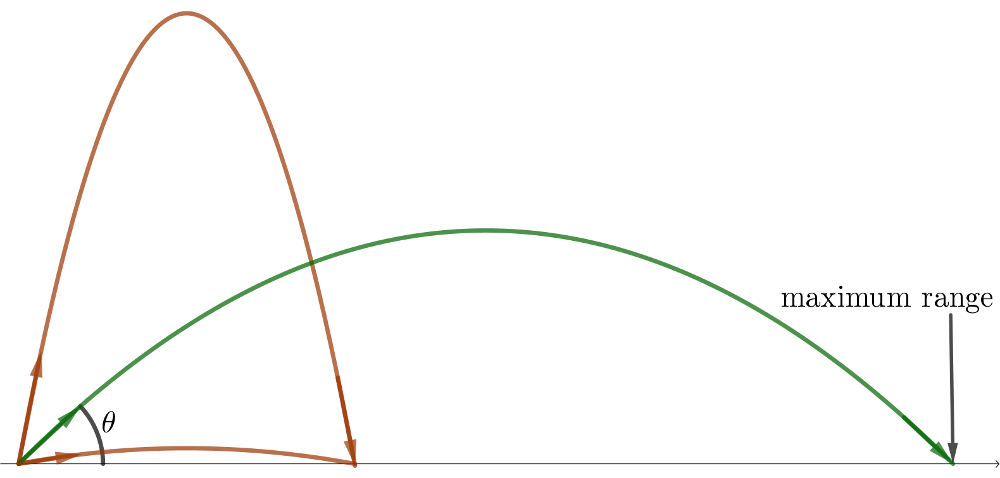

Release Angle at Ground Level
Q: A projectile is released at ground level and lands at ground level. At what angle $\theta$ above the horizontal should the projectile be released to maximize range? The well-known answer of $45^\circ$ comes down to symmetry.
Let $s$ denote the initial speed of the projectile at the moment of release. From physics, the kinematic equations are
where $g=32\text{ ft/s}^2$ is the magnitude of acceleration due to gravity, and $u=s\cos\theta$ and $v=s\sin\theta$ are the initial horizontal and vertical components of velocity.
Setting $y(t)=0$ and dividing by $t$, we can solve for the nonzero solution:
Time in air is directly proportional to $v$.
The range is the product of the horizontal speed and the time in air. Let $r$ denote range.
In the language of Section 4.5, $r$ is the objective function and the constraint is $u^2+v^2=s^2$. Since the objective function and constraint equation are both symmetric in $u$ and $v$, the roles of $u$ and $v$ are interchangeable for the optimization. The maximum value of $r$ therefore occurs when $u=v$, or equivalently, when $\cos\theta=\sin\theta$.
Therefore, the optimal launch angle is $45^\circ$.